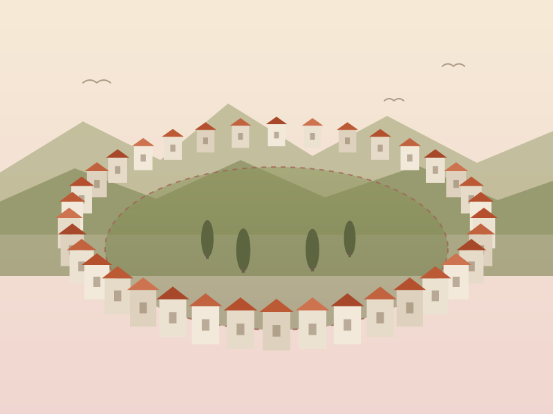

Dove
Via Anfiteatro Romano, nel quadrante nord-est del centro storico, poco prima di Porta Perlici.
- A piedi dalla Cattedrale di San Rufino, in salita
- Vicoli stretti e in pendenza
- Poco distante dalla Rocca Maggiore
Assisi · Umbria · I secolo d.C.
Dell'anfiteatro romano di Assisi non restano gradinate né arcate: le sue pietre sono finite, secolo dopo secolo, dentro le case della città. Quello che è sopravvissuto è la forma. Le abitazioni medievali si sono appoggiate al perimetro dell'edificio antico e ne hanno ricalcato l'ellisse, che oggi si legge ancora nella pianta dell'isolato vicino a Porta Perlici.

La storia
La vicenda dell'anfiteatro di Assisi è quella di molti edifici romani nelle città rimaste abitate: non una distruzione improvvisa, ma un lento riassorbimento dentro la città che è venuta dopo.
I secolo d.C.
In età imperiale l'Asisium romana si dota di un anfiteatro, costruito ai margini nord-orientali dell'abitato, nel punto in cui il pendio del colle permetteva di appoggiare parte della struttura al terreno naturale — un accorgimento comune, che riduceva il volume di muratura necessario a reggere le gradinate.
Tarda antichità
Con la fine dei giochi e il ridimensionamento della città, l'edificio perde la sua funzione. Resta in piedi, vuoto, come un grande recinto di pietra ai bordi del centro abitato.
Medioevo
L'anfiteatro diventa una cava a cielo aperto: i blocchi vengono smontati e reimpiegati nelle costruzioni della città, come accade in tutta Assisi con il materiale antico. Contemporaneamente il perimetro viene occupato da abitazioni, che si addossano a quel che resta delle murature.
Da allora a oggi
Le case costruite sull'anello ne hanno conservato l'andamento curvo. Il vuoto centrale — l'arena — non è mai stato edificato ed è rimasto spazio aperto, coltivato a orti e giardini. È questo doppio accidente, case sul bordo e vuoto al centro, ad aver tramandato la pianta dell'edificio antico fino a noi.
Cosa resta
Non si visita un monumento: si percorre un isolato. Il modo giusto di guardarlo è seguirne il giro a piedi, lasciando che sia la strada a raccontare la curva.
Camminando lungo il giro esterno si nota che i fronti delle case non sono allineati su una retta ma seguono un arco continuo. È la traccia più evidente dell'edificio scomparso.
L'area interna, corrispondente all'arena, è rimasta libera: oggi è occupata da orti e giardini privati, visibili in parte dagli affacci lungo il perimetro.
Nei muri delle abitazioni si riconoscono blocchi di reimpiego, di dimensioni e lavorazione diverse rispetto alla muratura medievale circostante.
La visita
Si trova nella parte alta e nord-orientale del centro storico, in una zona residenziale e tranquilla, fuori dai percorsi più affollati.
Via Anfiteatro Romano, nel quadrante nord-est del centro storico, poco prima di Porta Perlici.
Essendo una strada pubblica all'aperto, è accessibile in qualsiasi momento e non richiede biglietto.
Non c'è un punto d'osservazione unico: il senso dell'edificio si coglie solo percorrendone tutto il perimetro.
Nei dintorni
L'anfiteatro sta a pochi minuti a piedi da alcuni dei luoghi più significativi della città, romani e medievali.
La porta che chiude il centro storico a nord-est, subito oltre l'isolato dell'anfiteatro.
In posizione dominante sopra la città: da lassù la forma ovale dell'isolato è particolarmente leggibile.
La cattedrale della città, con la sua facciata romanica, sulla via che scende dall'anfiteatro verso il centro.
In Piazza del Comune, il cuore della città antica: il tempio in facciata, l'area del foro romano nel sottosuolo.
Orari, accessi e visite guidate ai siti archeologici di Assisi cambiano con la stagione: conviene verificarli sui canali ufficiali del Comune e del sistema museale cittadino.